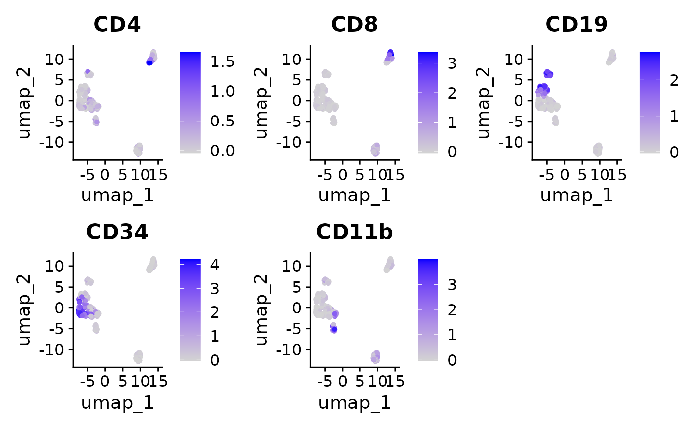
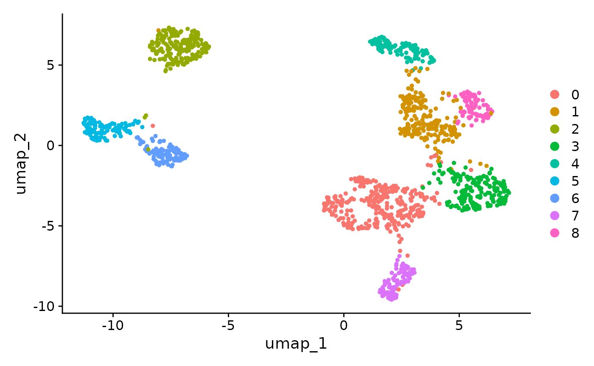
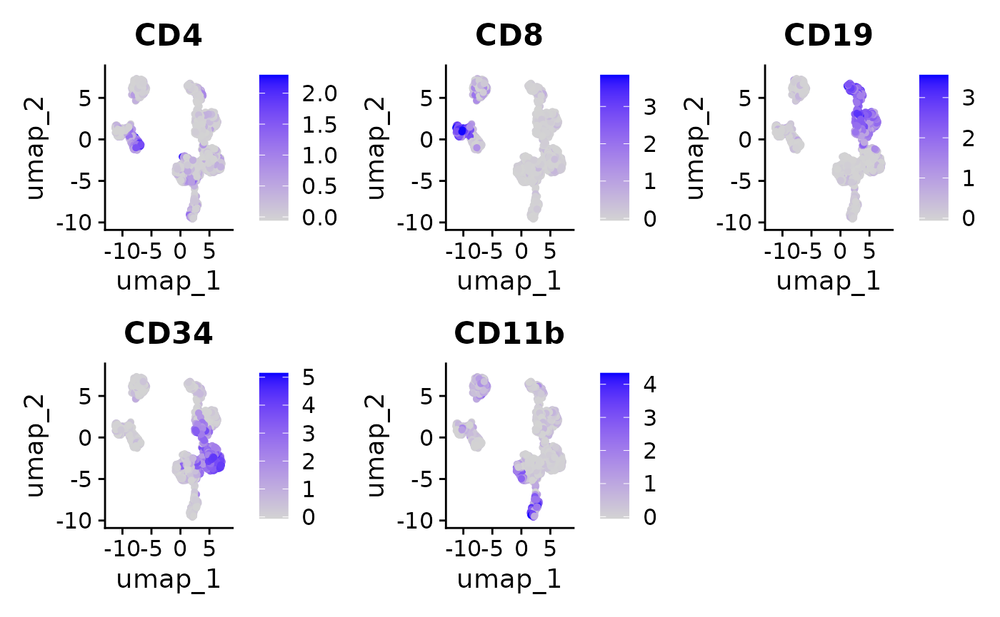

Interoperability with Seurat
Givanna Putri
interoperability_with_seurat.RmdIntroduction
How can we integrate SuperCellCyto’s output with cytometry data stored in Seurat objects? Is it possible to store the results of SuperCellCyto as Seurat objects for subsequent analysis using Seurat? The answer to both is yes.
In this vignette, we demonstrate this process using a subsampled Levine_32dim dataset used in our manuscript stored in a Seurat object. We will show how to create supercells from this data and analyze them using Seurat.
Preparing Seurat object
The subsampled Levine_32dim data is stored as a qs
object. We begin by loading this data using the qread
function from the qs package.
seurat_obj <- qread("data/Levine_32dim_seurat_sub.qs")
seurat_obj
#> An object of class Seurat
#> 39 features across 1400 samples within 1 assay
#> Active assay: originalexp (39 features, 0 variable features)
#> 2 layers present: counts, dataThe data is stored in the originalexp assay, with both
counts and data slots containing raw data.
Before running SuperCellCyto, we will first:
- Subset this data to retain only the markers we need to perform downstream analysis.
- Perform arcsinh transformation, and store the transformed data in
the
dataslot of theoriginalexpassay.
markers <- c(
"CD45RA", "CD133", "CD19", "CD22", "CD11b", "CD4", "CD8", "CD34", "Flt3",
"CD20", "CXCR4", "CD235ab", "CD45", "CD123", "CD321", "CD14", "CD33", "CD47",
"CD11c", "CD7", "CD15", "CD16", "CD44", "CD38", "CD13", "CD3", "CD61", "CD117",
"CD49d", "HLA-DR", "CD64", "CD41"
)
# keep only the relevant markers
seurat_obj <- seurat_obj[markers, ]
# to store arcsinh transformed data
seurat_obj[['originalexp']]$data <- asinh(seurat_obj[['originalexp']]$counts / 5)
seurat_obj
#> An object of class Seurat
#> 32 features across 1400 samples within 1 assay
#> Active assay: originalexp (32 features, 0 variable features)
#> 2 layers present: counts, dataRun SuperCellCyto
SuperCellCyto requires the input data in a data.table
format. Hence, we will extract the arcsinh-transformed data from the
Seurat object, format it into a data.table, and include sample
information and cell IDs.
It’s important to note that Seurat objects typically store cells as columns and features (markers or genes) as rows. Since SuperCellCyto expects cells as rows and features as columns, we will also transpose the data.
After transposing and preparing the data table, we run
runSuperCellCyto function, passing the required parameters
including the markers, sample column name, cell ID column name, and
gamma value.
# check.names set to FALSE so HLA-DR is not replaced with HLA.DR
dt <- data.table(t(data.frame(seurat_obj[['originalexp']]$data, check.names = FALSE)))
# add the cell_id and sample metadata
dt <- cbind(dt, seurat_obj[[c("cell_id", "sample")]])
supercells <- runSuperCellCyto(
dt = dt,
markers = markers,
sample_colname = "sample",
cell_id_colname = "cell_id",
gam = 5
)
head(supercells$supercell_expression_matrix)
#> CD45RA CD133 CD19 CD22 CD11b CD4
#> <num> <num> <num> <num> <num> <num>
#> 1: 0.3527464 0.36965658 0.052225408 0.15136864 0.38488737 0.196023673
#> 2: 0.4041729 0.11507111 -0.006932994 0.14693022 0.31907116 -0.003634473
#> 3: 0.2887375 0.36023125 0.056967849 0.07522713 0.24452473 0.029621008
#> 4: 0.4649379 0.08945479 0.103484348 0.11839183 0.14487231 1.042568045
#> 5: 0.9805149 0.19259931 2.047843479 0.63399673 0.19205448 0.069494473
#> 6: 0.5039989 0.04109535 1.140960742 0.16492283 0.02102912 0.071198534
#> CD8 CD34 Flt3 CD20 CXCR4 CD235ab CD45
#> <num> <num> <num> <num> <num> <num> <num>
#> 1: 0.007764969 3.50239704 0.34908410 0.05885608 0.8318448 0.08275919 4.150848
#> 2: 0.398832012 0.03705595 0.08254384 0.11077190 0.1816196 0.23423737 4.807796
#> 3: 0.141084382 2.86064160 0.15894138 0.09338509 0.5989438 0.28179014 3.957416
#> 4: 0.071286889 0.10101316 0.29710281 0.03730981 1.2497923 0.67063325 5.886074
#> 5: 0.119244014 0.18210858 0.18761215 1.92656431 1.6019596 0.55462384 4.901840
#> 6: 0.004411946 0.11332847 0.18281316 0.16633969 0.5100604 0.28425575 2.570437
#> CD123 CD321 CD14 CD33 CD47 CD11c CD7
#> <num> <num> <num> <num> <num> <num> <num>
#> 1: 0.65958207 3.4777525 0.002602230 0.152636911 3.397630 0.5570696 0.12059033
#> 2: 0.01079346 0.7022473 0.040223896 -0.019154034 2.348988 0.3813772 3.63888594
#> 3: 0.68153776 3.1851073 0.015196514 0.117996726 2.756822 0.3060572 0.07848237
#> 4: 0.11592253 2.1491149 -0.007858091 -0.002039228 3.268248 0.2132838 1.08816761
#> 5: 0.62460814 2.2506667 0.075977004 0.514268184 3.562088 0.2269047 0.01379916
#> 6: 0.06874399 0.8415449 0.068690241 0.240470325 3.154016 0.4181508 0.07325880
#> CD15 CD16 CD44 CD38 CD13 CD3 CD61
#> <num> <num> <num> <num> <num> <num> <num>
#> 1: 0.63687911 0.195011598 4.262887 2.6031938 0.4192431 0.46531929 0.06761204
#> 2: 0.17664753 0.905724996 1.632231 2.8565129 0.2514765 0.27068380 0.25558748
#> 3: 0.44514407 0.026423501 2.874195 1.9066412 0.4908399 0.24716531 0.17950440
#> 4: 0.08441551 0.004227474 3.640311 0.5495787 0.2311405 5.36168058 0.39291676
#> 5: 0.14494562 0.252655577 2.822493 5.0658843 0.5187125 0.33558106 0.19615231
#> 6: 0.30214595 0.281831160 3.819350 5.8639208 1.0289835 0.07946019 0.08158021
#> CD117 CD49d HLA-DR CD64 CD41 sample
#> <num> <num> <num> <num> <num> <char>
#> 1: 1.19031991 1.3604618 2.75321307 0.16150006 0.18985821 H1
#> 2: 0.06541793 0.4496903 0.14374144 0.18547915 0.06282481 H1
#> 3: 0.83249351 0.9205626 2.58482319 0.20073796 0.21266848 H1
#> 4: 0.29209802 0.4707183 0.17818566 0.04568237 0.07765066 H1
#> 5: 0.10129956 1.3608945 2.20287695 0.09954007 0.17256851 H1
#> 6: -0.01764885 1.4263210 0.07484084 0.06353135 0.06840618 H1
#> SuperCellId
#> <char>
#> 1: SuperCell_1_Sample_H1
#> 2: SuperCell_2_Sample_H1
#> 3: SuperCell_3_Sample_H1
#> 4: SuperCell_4_Sample_H1
#> 5: SuperCell_5_Sample_H1
#> 6: SuperCell_6_Sample_H1We can now embed the supercell ID in the metadata of our Seurat object.
seurat_obj$supercell_id <- factor(supercells$supercell_cell_map$SuperCellID)
head(seurat_obj[[]])
#> orig.ident nCount_originalexp nFeature_originalexp population cell_id
#> cell_561 cell 782.3311 23 Basophils cell_561
#> cell_321 cell 849.1107 28 Basophils cell_321
#> cell_153 cell 1349.6991 21 Basophils cell_153
#> cell_74 cell 908.6923 23 Basophils cell_74
#> cell_228 cell 723.2195 27 Basophils cell_228
#> cell_146 cell 444.4285 22 Basophils cell_146
#> sample supercell_id
#> cell_561 H1 SuperCell_94_Sample_H1
#> cell_321 H1 SuperCell_51_Sample_H1
#> cell_153 H1 SuperCell_29_Sample_H1
#> cell_74 H1 SuperCell_51_Sample_H1
#> cell_228 H1 SuperCell_51_Sample_H1
#> cell_146 H1 SuperCell_25_Sample_H1Analyse Supercells as Seurat object
The supercell expression matrix, having fewer supercells than the number of cells in the Seurat object, is best stored as a separate Seurat object. This allows us to use Seurat’s functions for analysis.
To do this, we first transpose the expression matrix, ensuring cells
are columns and markers are rows, and then create a new Seurat object
with the default RNA assay. The data and
counts slots of the RNA assay are then set to contain the
marker expression.
supercell_exp_mat <- t(supercells$supercell_expression_matrix[, markers, with=FALSE])
colnames(supercell_exp_mat) <- supercells$supercell_expression_matrix$SuperCellId
supercell_seurat_obj <- CreateSeuratObject(counts = supercell_exp_mat)
#> Warning: Data is of class matrix. Coercing to dgCMatrix.
supercell_seurat_obj[['RNA']]$data <- supercell_seurat_obj[['RNA']]$counts
supercell_seurat_obj
#> An object of class Seurat
#> 32 features across 280 samples within 1 assay
#> Active assay: RNA (32 features, 0 variable features)
#> 2 layers present: counts, dataWith the supercell marker expression stored as a Seurat object, we can proceed with performing downstream analysis such as clustering and creating UMAP plots.
# Have to do this, otherwise Seurat will complain
supercell_seurat_obj <- ScaleData(supercell_seurat_obj)
supercell_seurat_obj <- RunPCA(
object = supercell_seurat_obj,
npcs = 10,
nfeatures.print = 1,
approx = FALSE,
seed.use = 42,
features = markers
)
supercell_seurat_obj <- FindNeighbors(supercell_seurat_obj, dims = 1:10)
supercell_seurat_obj <- FindClusters(supercell_seurat_obj, resolution = 0.5)
#> Modularity Optimizer version 1.3.0 by Ludo Waltman and Nees Jan van Eck
#>
#> Number of nodes: 280
#> Number of edges: 6252
#>
#> Running Louvain algorithm...
#> Maximum modularity in 10 random starts: 0.8590
#> Number of communities: 7
#> Elapsed time: 0 seconds
supercell_seurat_obj <- RunUMAP(supercell_seurat_obj, dims = 1:10)
#> Warning: The default method for RunUMAP has changed from calling Python UMAP via reticulate to the R-native UWOT using the cosine metric
#> To use Python UMAP via reticulate, set umap.method to 'umap-learn' and metric to 'correlation'
#> This message will be shown once per session
DimPlot(supercell_seurat_obj, reduction = "umap")
FeaturePlot(supercell_seurat_obj, features = c("CD4", "CD8", "CD19", "CD34", "CD11b"), ncol = 3)
Transfer information from supercells Seurat object to single cell Seurat object
To transfer information (e.g., clusters) obtained from analyzing supercells back to the single cells, we need to do some data wrangling. The key is ensuring the order of the new information aligns with the order of cells in the Seurat object.
We demonstrate this using cluster information as an example. We first
extract the metadata from the single-cell Seurat object and clustering
information from the supercells Seurat object into two different
data.table objects, We then merge them using
merge.data.table, setting the sort parameter
to FALSE and x parameter to the data.table
containing the metadata from the single-cell Seurat object These ensure
the result is in the order of the metadata from our single-cell Seurat
object.
clusters <- data.table(
supercell_id = colnames(supercell_seurat_obj),
cluster = as.vector(Idents(supercell_seurat_obj))
)
cell_metadata <- seurat_obj[[]]
cell_metadata <- merge.data.table(
x = cell_metadata,
y = clusters,
by = "supercell_id",
sort = FALSE
)After merging, we can add the cluster assignment to the metadata of the single-cell Seurat object.
seurat_obj$cluster <- cell_metadata$cluster
Idents(seurat_obj) <- "cluster"Then visualise the cluster assignments and marker expressions of our clustered single cell data.
seurat_obj <- ScaleData(seurat_obj)
seurat_obj <- RunPCA(
object = seurat_obj,
npcs = 10,
nfeatures.print = 1,
approx = FALSE,
seed.use = 42,
features = markers
)
seurat_obj <- FindNeighbors(seurat_obj, dims = 1:10)
seurat_obj <- FindClusters(seurat_obj, resolution = 0.5)
#> Modularity Optimizer version 1.3.0 by Ludo Waltman and Nees Jan van Eck
#>
#> Number of nodes: 1400
#> Number of edges: 45134
#>
#> Running Louvain algorithm...
#> Maximum modularity in 10 random starts: 0.9088
#> Number of communities: 9
#> Elapsed time: 0 seconds
seurat_obj <- RunUMAP(seurat_obj, dims = 1:10)
DimPlot(seurat_obj, reduction = "umap")
FeaturePlot(seurat_obj, features = c("CD4", "CD8", "CD19", "CD34", "CD11b"), ncol = 3)
Session information
sessionInfo()
#> R version 4.3.3 (2024-02-29)
#> Platform: x86_64-pc-linux-gnu (64-bit)
#> Running under: Ubuntu 22.04.4 LTS
#>
#> Matrix products: default
#> BLAS: /usr/lib/x86_64-linux-gnu/openblas-pthread/libblas.so.3
#> LAPACK: /usr/lib/x86_64-linux-gnu/openblas-pthread/libopenblasp-r0.3.20.so; LAPACK version 3.10.0
#>
#> locale:
#> [1] LC_CTYPE=C.UTF-8 LC_NUMERIC=C LC_TIME=C.UTF-8
#> [4] LC_COLLATE=C.UTF-8 LC_MONETARY=C.UTF-8 LC_MESSAGES=C.UTF-8
#> [7] LC_PAPER=C.UTF-8 LC_NAME=C LC_ADDRESS=C
#> [10] LC_TELEPHONE=C LC_MEASUREMENT=C.UTF-8 LC_IDENTIFICATION=C
#>
#> time zone: UTC
#> tzcode source: system (glibc)
#>
#> attached base packages:
#> [1] stats graphics grDevices utils datasets methods base
#>
#> other attached packages:
#> [1] SuperCellCyto_0.1.0 data.table_1.15.4 Seurat_5.0.3
#> [4] SeuratObject_5.0.1 sp_2.1-3 qs_0.26.1
#>
#> loaded via a namespace (and not attached):
#> [1] RColorBrewer_1.1-3 jsonlite_1.8.8 magrittr_2.0.3
#> [4] spatstat.utils_3.0-4 farver_2.1.1 rmarkdown_2.26
#> [7] fs_1.6.3 ragg_1.3.0 vctrs_0.6.5
#> [10] ROCR_1.0-11 memoise_2.0.1 spatstat.explore_3.2-7
#> [13] htmltools_0.5.8.1 sass_0.4.9 sctransform_0.4.1
#> [16] parallelly_1.37.1 KernSmooth_2.23-22 bslib_0.7.0
#> [19] htmlwidgets_1.6.4 desc_1.4.3 ica_1.0-3
#> [22] plyr_1.8.9 plotly_4.10.4 zoo_1.8-12
#> [25] cachem_1.0.8 igraph_2.0.3 mime_0.12
#> [28] lifecycle_1.0.4 pkgconfig_2.0.3 Matrix_1.6-5
#> [31] R6_2.5.1 fastmap_1.1.1 fitdistrplus_1.1-11
#> [34] future_1.33.2 shiny_1.8.1.1 digest_0.6.35
#> [37] colorspace_2.1-0 patchwork_1.2.0 tensor_1.5
#> [40] RSpectra_0.16-1 irlba_2.3.5.1 textshaping_0.3.7
#> [43] labeling_0.4.3 progressr_0.14.0 fansi_1.0.6
#> [46] spatstat.sparse_3.0-3 httr_1.4.7 polyclip_1.10-6
#> [49] abind_1.4-5 compiler_4.3.3 withr_3.0.0
#> [52] BiocParallel_1.36.0 fastDummies_1.7.3 highr_0.10
#> [55] MASS_7.3-60.0.1 tools_4.3.3 lmtest_0.9-40
#> [58] httpuv_1.6.15 future.apply_1.11.2 goftest_1.2-3
#> [61] glue_1.7.0 nlme_3.1-164 promises_1.3.0
#> [64] grid_4.3.3 Rtsne_0.17 cluster_2.1.6
#> [67] reshape2_1.4.4 generics_0.1.3 gtable_0.3.4
#> [70] spatstat.data_3.0-4 tidyr_1.3.1 RApiSerialize_0.1.2
#> [73] stringfish_0.16.0 utf8_1.2.4 spatstat.geom_3.2-9
#> [76] RcppAnnoy_0.0.22 ggrepel_0.9.5 RANN_2.6.1
#> [79] pillar_1.9.0 stringr_1.5.1 spam_2.10-0
#> [82] RcppHNSW_0.6.0 later_1.3.2 splines_4.3.3
#> [85] dplyr_1.1.4 lattice_0.22-5 survival_3.5-8
#> [88] deldir_2.0-4 tidyselect_1.2.1 miniUI_0.1.1.1
#> [91] pbapply_1.7-2 knitr_1.46 gridExtra_2.3
#> [94] scattermore_1.2 xfun_0.43 matrixStats_1.2.0
#> [97] stringi_1.8.3 lazyeval_0.2.2 yaml_2.3.8
#> [100] evaluate_0.23 codetools_0.2-19 SuperCell_1.0
#> [103] tibble_3.2.1 cli_3.6.2 uwot_0.1.16
#> [106] RcppParallel_5.1.7 xtable_1.8-4 reticulate_1.35.0
#> [109] systemfonts_1.0.6 munsell_0.5.1 jquerylib_0.1.4
#> [112] Rcpp_1.0.12 globals_0.16.3 spatstat.random_3.2-3
#> [115] png_0.1-8 parallel_4.3.3 pkgdown_2.0.7
#> [118] ggplot2_3.5.0 dotCall64_1.1-1 listenv_0.9.1
#> [121] viridisLite_0.4.2 scales_1.3.0 ggridges_0.5.6
#> [124] leiden_0.4.3.1 purrr_1.0.2 rlang_1.1.3
#> [127] cowplot_1.1.3